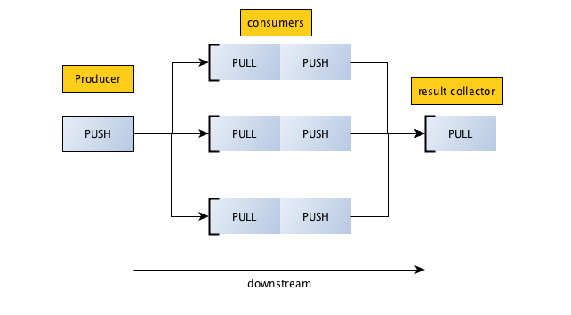

Server & Client (17 SLOC)
import zmq context = zmq.Context() socket = context.socket(zmq.REP) socket.bind("tcp://*:5000") # listens on all interfaces while True: msg = socket.recv() socket.send(msg)
import zmq context = zmq.Context() socket = context.socket(zmq.REQ) socket.connect("tcp://127.0.0.1:5000") for i in range(10): msg = "msg %s" % i socket.send(msg) msg_in = socket.recv()

/